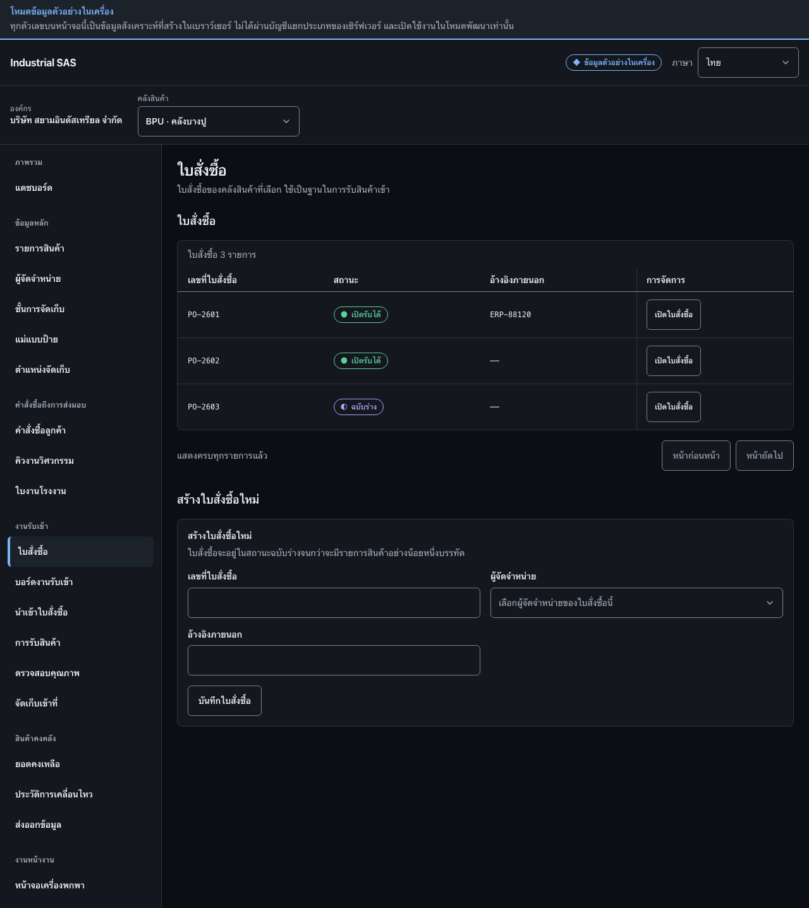

สร้างและเปิดใบสั่งซื้อCreate and open a purchase order
สร้างใบสั่งซื้อฉบับร่างสำหรับผู้จัดจำหน่ายรายหนึ่ง หรือเปิดใบสั่งซื้อที่มีอยู่เพื่อทำงานต่อCreate a draft purchase order for a supplier, or open an existing one to continue work.
สิ่งที่ต้องมีก่อนเริ่มBefore you start
- มีผู้จัดจำหน่ายที่สถานะใช้งานอยู่ในทะเบียนAn active supplier exists in the register
- ทราบเลขที่ใบสั่งซื้อและอ้างอิงภายนอกถ้ามีThe purchase-order number and any external reference are known

ขั้นตอนSteps
- ที่กรอบ 1 กด “เปิดใบสั่งซื้อ” เมื่อต้องการทำงานต่อกับใบสั่งซื้อที่มีอยู่In box 1, press “Open purchase order” to continue with an existing order.
- ที่กรอบ 2 กรอกเลขที่ใบสั่งซื้อ เลือกผู้จัดจำหน่าย และกรอกอ้างอิงภายนอกถ้ามีIn box 2, enter the purchase-order number, choose the supplier, and enter the external reference if there is one.
- กด “บันทึกใบสั่งซื้อ”Press “Save purchase order”.
ตรวจว่างานสำเร็จอย่างไรHow to tell it worked
- ใบสั่งซื้อใหม่ปรากฏในทะเบียนโดยเริ่มเป็นฉบับร่างThe new purchase order appears in the register as a draft.
- ใบสั่งซื้อจะพร้อมรับสินค้าเมื่อมีรายการสินค้าอย่างน้อยหนึ่งบรรทัดThe order becomes receivable only once it has at least one line.